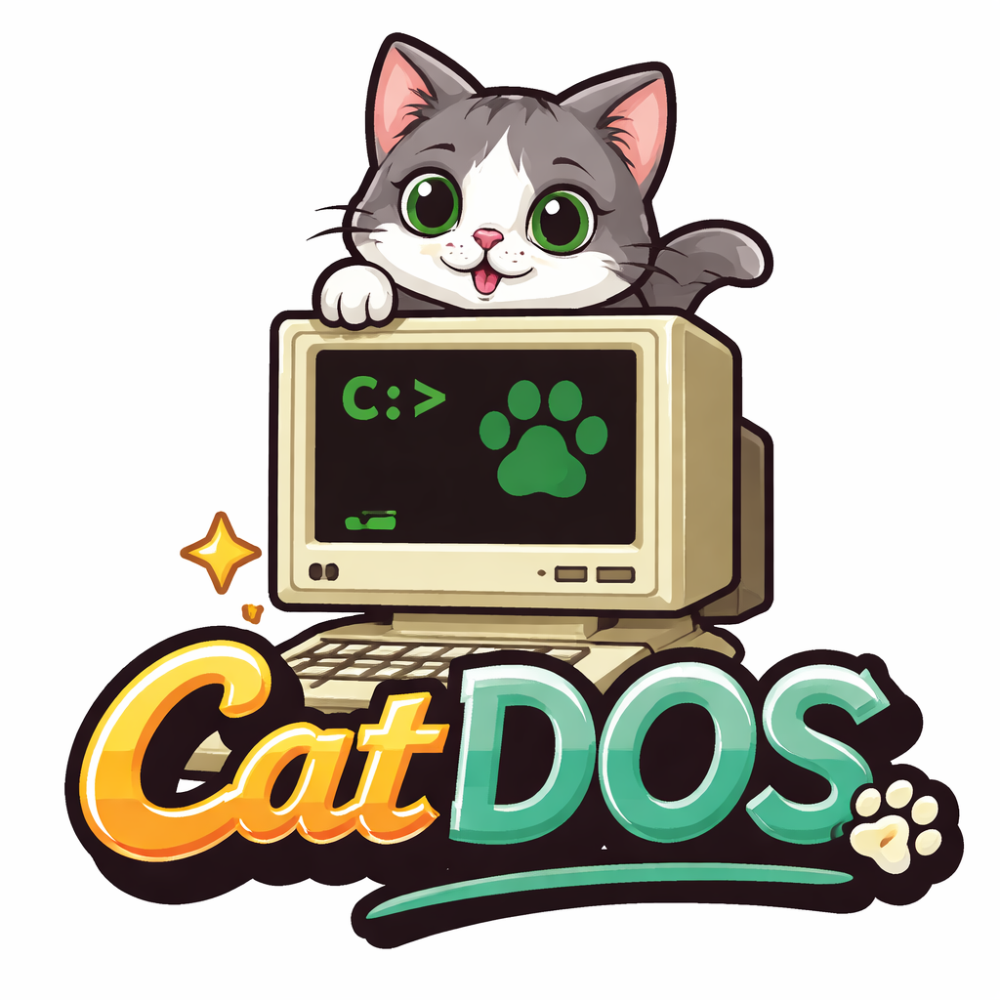

A fun DOSBox fork by CrakkoCat
CatDOS is a lightweight fork of DOSBox focused on simplicity, performance improvements, and a few fun cat-themed extras.
It allows you to run classic DOS games and software while keeping the experience simple and accessible.
Get the latest release and start running classic DOS software.
Note: CatDOS will appear as DOSBox. This is intended behavior.
Most DOSBox configuration files will work with CatDOS.